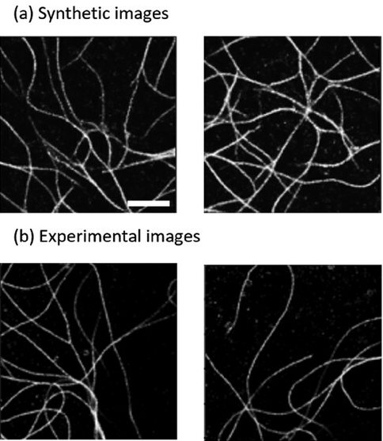
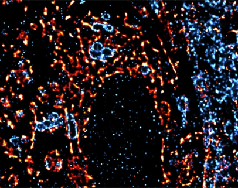

About Me
I am a machine learning researcher with a Ph.D. in Biomedical Engineering
and a B.Sc. in Electrical Engineering from the Technion. I previously worked as a
Computer Vision and Machine Learning Engineer at Apple, and I am currently a
Postdoctoral Research Scientist at Columbia University in the Zuckerman Institute.
My work focuses on developing learning-based and statistical methods for complex, noisy,
high-dimensional data. Across industry and academic research, I have worked on
deep learning, computer vision, generative modeling, multimodal representation learning,
probabilistic inference, neural decoding, signal processing, and large-scale data pipelines.
Current research
- Foundation and multimodal models for large-scale neural recordings
- Representation learning and diffusion models for denoising and neural signal modeling
- Statistical inference and decoding from high-dimensional electrophysiology
- Signal processing, compression, and dimensionality reduction for neural time series
Experience
-
2025–Present
Postdoctoral Research Scientist · Columbia University
Machine learning and statistical modeling for large-scale electrophysiology, including multimodal and foundation models, diffusion models, representation learning, neural decoding, dimensionality reduction, and signal processing.
-
2023–2025
Computer Vision and Machine Learning Engineer · Apple
Developed active-learning methods, semantic clustering and de-duplication approaches, large-scale machine learning models, and AWS-based data processing workflows.
-
2019–2023
Teaching Assistant · Technion
Courses in computational optical imaging, biological signal analysis, deep learning in MRI, and bioelectronic design; supervised undergraduate projects.
Education
-
2019–2024
Ph.D. in Biomedical Engineering · Technion
Thesis: Dynamic Microscopy via Deep Learning · Advisor: Prof. Yoav Shechtman
-
2015–2019
B.Sc. in Electrical Engineering · Technion
Focus areas: machine learning, signal processing, and biological systems.
Awards
2025
Fulbright Postdoctoral Fellowship
2024
Citation of Excellence for Outstanding Ph.D. Students · Jacobs and Gutwirth
2024
Jacobs Prize of Excellent Publication
2021–2023
Excellent Tutor Recognition · Faculty of Biomedical Engineering
Selected Research Projects
Selected projects spanning large-scale neuroscience, generative modeling, computer vision, and computational imaging.
Brain-Wide Electrophysiology Atlas
A brain-wide reference model of electrophysiological organization built from approximately 1,000 Neuropixels recordings. The project combines electrophysiological, anatomical, molecular, and cellular information to model neural activity across spatial scales and infer recording locations directly from measured activity.
Representation Learning
Multimodal Modeling
Statistical Inference

Project image unavailable
This Microtubule Does Not Exist: Super-Resolution Microscopy Image Generation by a Diffusion Model
A diffusion-based generative model for super-resolution microscopy, with quantitative validation of image realism, diversity, and potential training-data memorization.
DBlink: Dynamic Localization Microscopy in Super Spatiotemporal Resolution
A deep-learning method for reconstructing dynamic biological processes from single-molecule localization microscopy data with improved spatiotemporal resolution.

Project image unavailable
One-Click Reconstruction in Single-Molecule Localization Microscopy
Parameter-aware deep learning for robust SMLM reconstruction with reduced manual tuning and improved generalization across imaging conditions.
Selected Publications
For a complete and current publication list, see Google Scholar.
- Saguy, A., Xiao, D., Narayanasamy, K. K., Nakatani, Y., Saliba, N., Gagliano, G., Gustavsson, A.-K., Heilemann, M., Shechtman, Y. (2025). One-click reconstruction in single-molecule localization microscopy via experimental parameter-aware deep learning. npj Imaging.
- Saguy, A., Nahimov, T., Lehrman, M., Gómez-de-Mariscal, E., Hidalgo-Cenalmor, I., Alalouf, O., Balakrishnan, A., Heilemann, M., Henriques, R., Shechtman, Y. (2025). This Microtubule Does Not Exist: Super-Resolution Microscopy Image Generation by a Diffusion Model. Small Methods.
- Hidalgo-Cenalmor, I., Pylvänäinen, J. W., Ferreira, M. G., Russell, C. T., Saguy, A., et al. (2024). DL4MicEverywhere: deep learning for microscopy made flexible, shareable and reproducible. Nature Methods.
- Saguy, A., Alalouf, O., Opatovski, N., Jang, S., Heilemann, M., Shechtman, Y. (2023). DBlink: dynamic localization microscopy in super spatiotemporal resolution via deep learning. Nature Methods.
- Ferdman, B., Saguy, A., Xiao, D., Shechtman, Y. (2022). Diffractive optical system design by cascaded propagation. Optics Express.
- Saguy, A., Jünger, F., Peleg, A., Ferdman, B., Nehme, E., Rohrbach, A., Shechtman, Y. (2021). Deep-ROCS: from speckle patterns to superior-resolved images by deep learning in rotating coherent scattering microscopy. Optics Express.
- Saguy, A., Baldering, T. N., Weiss, L. E., Nehme, E., Karathanasis, C., Dietz, M. S., Heilemann, M., Shechtman, Y. (2021). Automated analysis of fluorescence kinetics in single-molecule localization microscopy data reveals protein stoichiometry. The Journal of Physical Chemistry B.